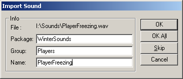

Importing Sounds
Before you import the sound
A short checklist of common problems:
- Do Not Alter Default Packages
- You have been warned!
- No spaces or other funny characters in the file or its directory tree
- UnrealEd will not import files with spaces in the directory or file name. Move the file to a different directory, if necessary. (This is not a problem for #exec directives though, as long as you enclose the file in double quotes.)
- No compression
- The engine only accepts uncompressed wave files. No ADPCM! No MP3 wave! No <insert other sound format>! Only plain old PCM wave audio files.
- No stereo
- ...or other multi-channel formats. The engine can only handle mono files.
- Watch the format
- The engine wants a standard sampling rate at 8 or 16 bit per sample. For UT you should stick to 11 or 22 kHz, newer games will definitely also handle 8, 16, 32, 44 and 48 kHz, but here you should find the lowest sampling rate that still sounds good. In most cases you will want to use 22 or 44 kHz at 16 bits/sample.
Importing...
So you have your PCM Mono wave file without any spaces in its file name or directory name and want to get it into the game. You have three options for importing now:
- via UnrealEd's sound browser
- via an UnrealEd console command #exec directive or
- via UCC BatchImport.
...via UnrealEd (to .UAX or myLevel)
Remember to use your sound in your map if you imported it to myLevel or save the sound package to a UAX file, otherwise the sound(s) will be lost when you close UnrealEd. |

The sound import dialog box. |
...via console commands (to .U or via UnrealEd Console)
The console command for importing sounds looks like this:
AUDIO IMPORT FILE=filename [NAME=soundname] [GROUP=groupname] [PACKAGE=packagename]
Mostly this command is used for importing sounds into a code package at compile time. In this case the Package parameter should be left out, otherwise the sound will only be imported to a temporary package that is not saved.
#exec AUDIO IMPORT FILE="Sounds\Tazer\TSHOTA6.WAV" NAME="TazerFire" GROUP="ASMD"You can also use the command (and some variations) in the UnrealEd Console:
- AUDIO IMPORT FILE="Sounds\Tazer\TSHOTA6.WAV" NAME="TazerFire" GROUP="ASMD" PACKAGE="TazerSounds"
- NEW SOUND FILE=Sounds\Tazer\TSHOTA6.WAV PACKAGE=MyLevel.ASMD NAME=TazerFire PACKAGE="TazerSounds"
- NEW SoundFactory FILE=Sounds\Tazer\TSHOTA6.WAV PACKAGE=MyLevel.ASMD NAME=TazerFire PACKAGE="TazerSounds"
Don't forget to save the new or modified package afterwards.
Note: A new package created this way might not immediately show up in the sound browser.
...via UCC Editor.BatchImport
You can use the BatchImport UCC commandlet to create a sound package without opening UnrealEd or compiling UnrealScript classes. See BatchImportCommandlet for details.
Creating Looping Sounds (only UT)
Ever wondered why your imported sounds wouldn't loop properly? I did too, and I found this:
Taken from EpicGames' Audio Reference:
To create a looping sound effect in a .wav file, you need a sound editing program like SoundForge (http://www.sfoundry.com) which supports looping sound effects. In Sound Forge, follow these instructions:
- Run SoundForge.
- Load your .wav file (either 8-bit or 16-bit).
- Bring up the "Special/Edit Sample..." dialog.
- Click on the "Sustaining" choice (as opposed to "One shot").
- Select "File/Save As...".
- Make sure that the "Save Sampler Information in file" option is checked.
- Click on the "Save button".
So that means the Looping property is set in the sound file itself, and not in UnrealEd. Dunno what other Programs are able to do this...
Note: UT2003 and other UnrealEngine2 games do not require this kind of special treatment to make sounds loop properly.